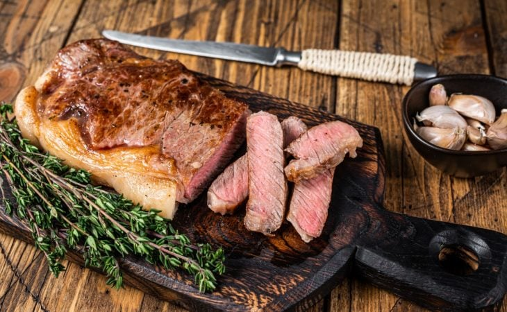

Picanha com manteiga

Receitas para um almoço de domingo
INGREDIENTES
- 1 kg de picanha
- 1 tablete de manteiga de leite
- 10 dentes de alho
- 1 colher de chá de pimenta calabresa
- 4 colheres de sopa de sal grosso
- 500 gramas macaxeira
MODO DE PREPARO
- Disponha a carne em um refratário. Espalhe os dentes de alho na picanha inteira.
- Tempere-a com sal grosso e adicione a manteiga sobre a carne e leve para assar a 200°C por 30 minutos.
- Passado o tempo, vire a picanha do outro lado, regando-a com mais manteiga e acrescente a macaxeira.
- Vire a picanha por mais duas vezes até ela estar bem frita na manteiga.
- Agora é só servir! Bom apetite.